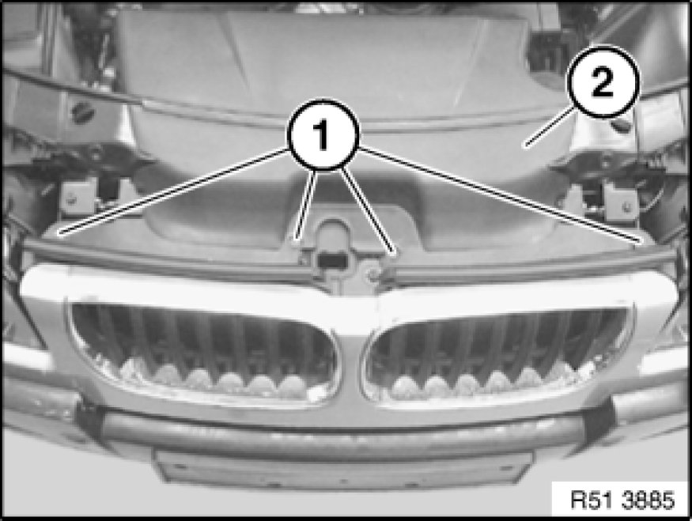
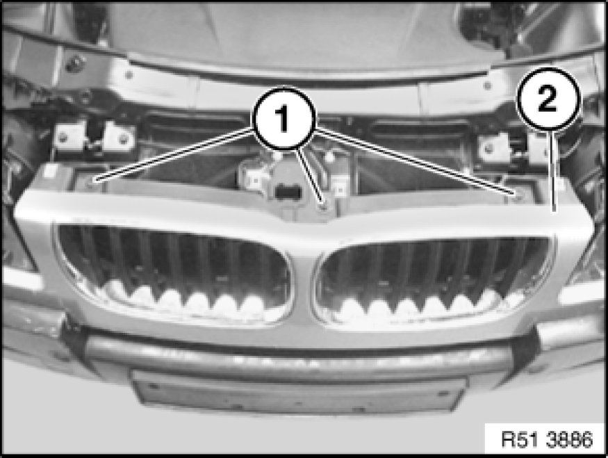
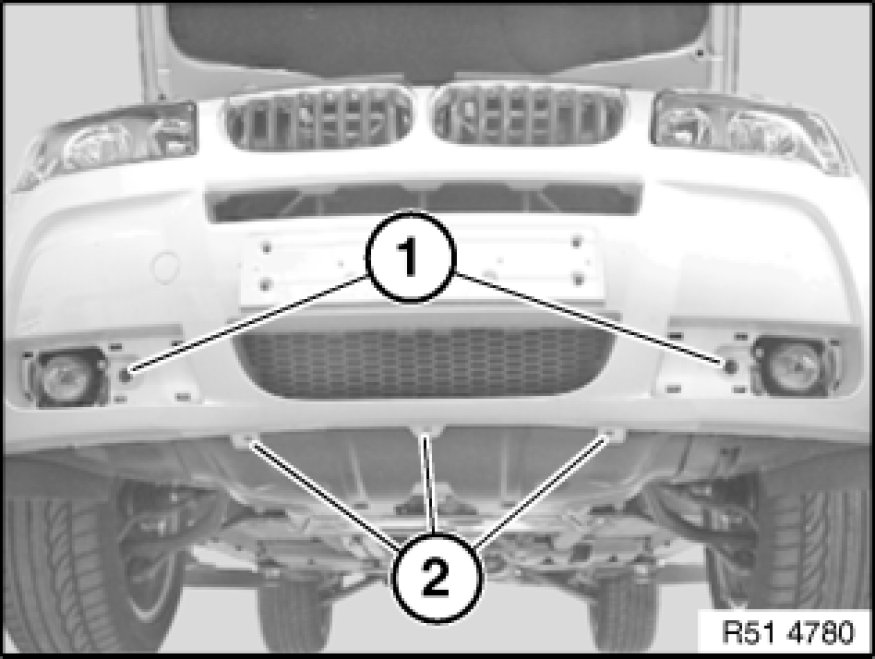
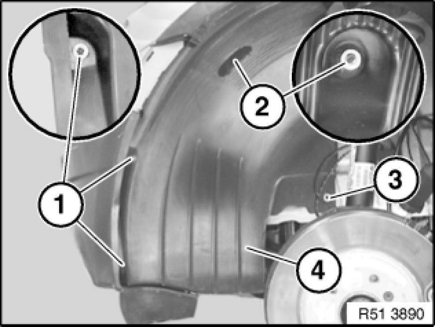
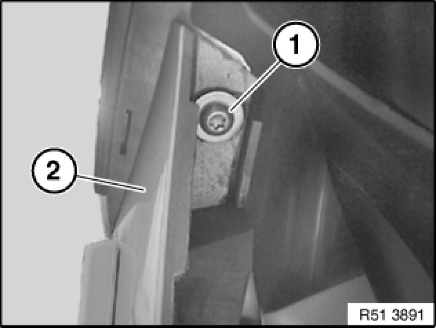
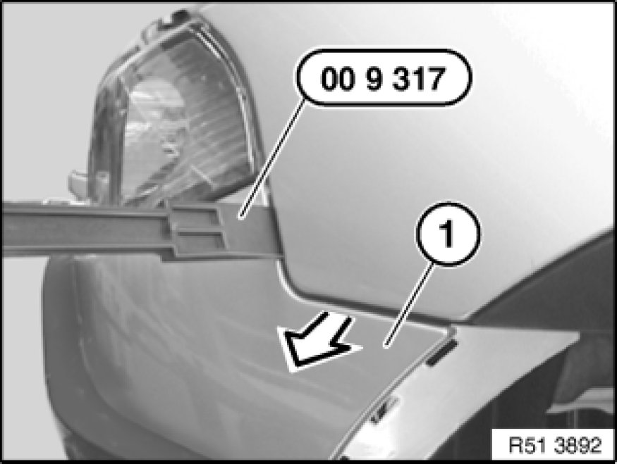
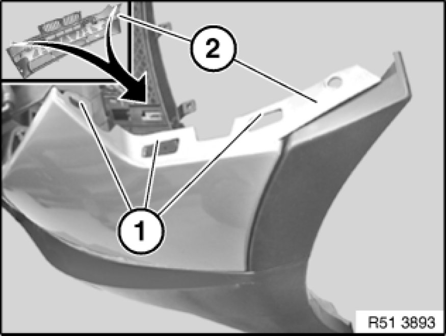

51 11 156 - Removing and installing/replacing front bumper trim (M Technic aerodynamic kit)
51 11 156 - Removing and installing/replacing front bumper trim (M Technic aerodynamic kit)

Special tools required:
- 00 9 317 00 9 317 Trim Panel Wedge

Necessary preliminary tasks:
- Remove both fog light trims
Version with headlight washer system:
- Remove both covers for headlight washer system Removing and Installing/Replacing Front Cover for Headlight Washer System on Left or Right (M Technic Aerodynamic Kit)

Release screws (1).
Remove air duct (2).
Installation:
Make sure air duct (2) is in correct position.

Release screws (1) on bumper trim (2).
Installation:
For adjustment, refer to Body gap dimensions.

Release screws (1 and 2).

Release screws or rivets (1 to 3) on wheel arch trim (4).
Lever out wheel arch trim (4) at side.
Installation:
Make sure wheel arch trim (4) is in correct position.

Release screw (1) on bumper trim (2).

Important!
Do not damage bumper trim when pulling off.
Lever out bumper trim (1) with special tool 00 9 317 00 9 317 Trim Panel Wedge in direction of arrow.
Pull bumper trim (1) forwards a little.
If necessary, disconnect plug connections on ultrasonic sensors and/or front fog lamps.
Remove bumper trim (1) towards front with aid of a 2nd person.

Installation:
Tabs (1) on bumper trim (2) must not be damaged.